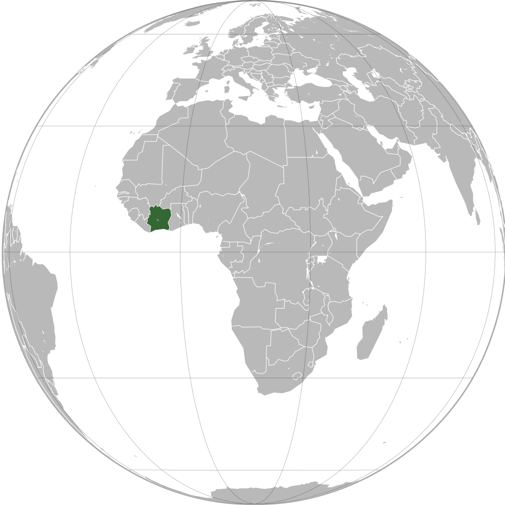
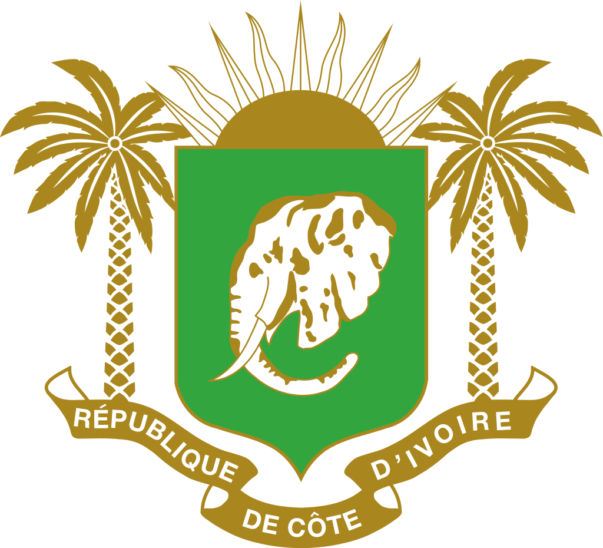

Je vous présente la Côte d'ivoire. 
Pays d'hospitalité
La Côte d'Ivoire est un État situé en Afrique occidentale. Elle présente sensiblement la forme d'un carré d'environ 600 km de côté. D’une superficie de 322 462 km2, elle est bordée :
- au nord-ouest par le Mali
- au nord-est par le Burkina Faso
- à l'est par le Ghana
- au sud-ouest par le Liberia
- à l'ouest-nord-ouest par la Guinée
- et au sud par l’océan Atlantique
Son drapeau est le orange, blanc et vert.

La dénomination de « Côte d'Ivoire » est la traduction en français du nom portugais de Costa do Marfim donné par les commerçants navigateurs en route vers l’Inde, qui apparaît sur les portulans portugais à la fin du xviie siècle. Le français est la langue officielle de la Côte d’Ivoire et plus de 80 % des habitants du pays le comprennent et le parlent. Selon l'OIF en 2009, 99 % des habitants de la plus grande ville du pays, Abidjan, savent lire, écrire et parler français. Aujourd’hui, plus du tiers de la population du pays a le français comme langue maternelle, surtout parmi les jeunes générations.
Son institution... 
Dès son accession à l’indépendance, la Côte d’Ivoire, État unitaire, opte pour un régime présidentiel123. Reconduit par la deuxième république, le régime présidentiel est caractérisé par la séparation des pouvoirs au sein de l’État :
- le pouvoir exécutif
- le pouvoir législatif
- le pouvoir judiciaire.